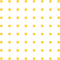

Enhance everything you do by using the latest from OpenAI to solve problems, write solutions and make life easier.
Get StartedExplain some code based on the syntax provided
function HelloWorld(text)
{
echo text || "Hello World";
}
The following code does: